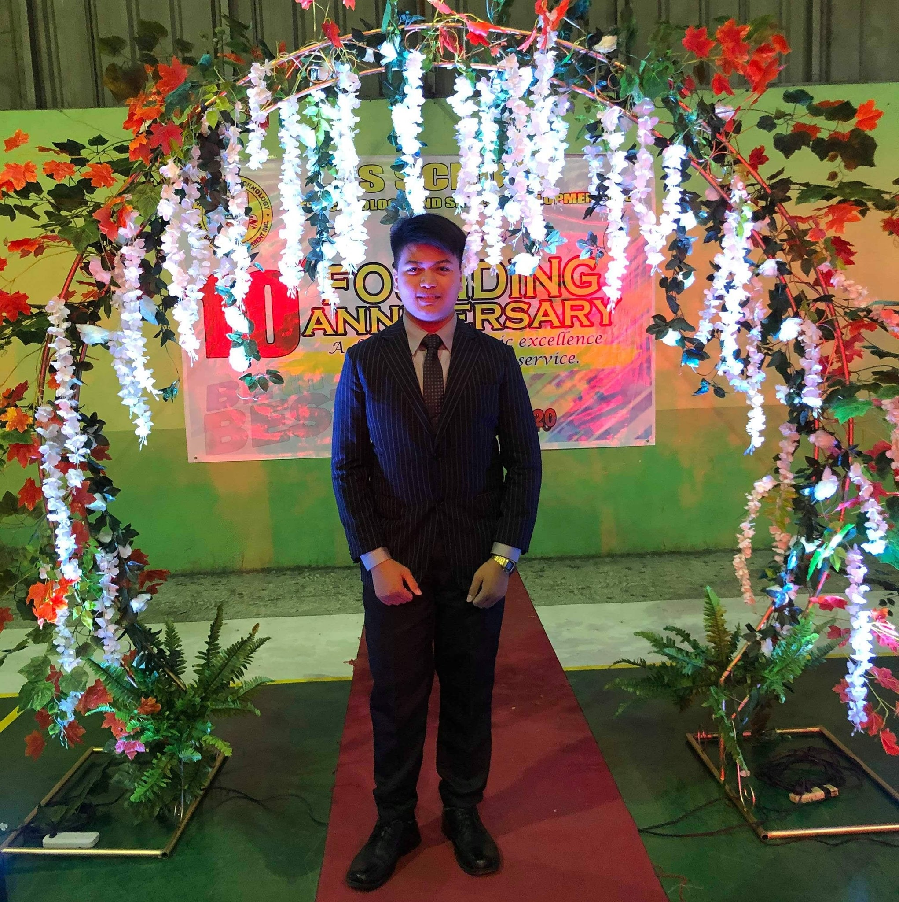

Personal DetailsName: |
John Philip I. PingulDue to graduate in 2025, Solutions oriented professional eager to apply completed accounting degree towards launching a successful career with an organization that will capitalize on accounting, administrative, leadership, communications and IT talents while offering opportunities for ongoing professional growth in exchange for a solid work ethic, integrity performance. EducationGuagua National Colleges, INC.
AboutHi, I'm John Philip Currently 3rd year BSIT Student. My main goal is to be a successful Web Developer to help people connect each other across the world.Reference Michael P. Maglanque, MBA, MIT Dean at College of Business Administration |